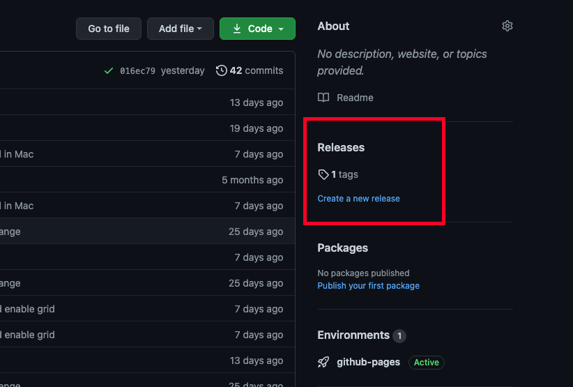

Como Instalar?¶
Windows¶
Para instalar no Windows é necessário ir diretamente no repositório https://github.com/luizborgess/controlador-digital-firmata e realizar do download do release do programa assim como na imagem abaixo:
Inserir outra imagem aqui;
Após realizado o download deve-se simplesmente executa-lo, assim já estará pronto para o uso.
MacOs¶
Para proceder com a instalação no MacOs, é necessário abrir o terminal, utilizar o comando:
cd <pasta na qual deseja instalar>
curl -JLO https://github.com/luizborgess/controlador-digital-firmata/archive/main.zip
unzip controlador-digital-firmata-main.zip
cd controlador-digital-firmata-main
chmod 755 install_mac.sh
./install_mac.sh
Esse script acima realiza do download do software e instala Homebrew e o Python3.x e todas as dependências necessárias para utilizar-lo.
Apos instalado o software irá iniciar automaticamente.
Para iniciar utilize o comando:
cd <pasta-do-programa>
python3 main.py
Linux¶
Para executar o software no Linux, assume-se que o próprio Linux esteja atualizado com a versão de Python3 mais recente, possuindo isso, basta utilizar os comandos abaixo para baixar o software e instalar as dependências:
wget https://github.com/luizborgess/controlador-digital-firmata/archive/main.zip
unzip main.zip
cd controlador-digital-firmata-main
python3 -m pip install -r requirements.txt
sudo apt-get install --reinstall libxcb-xinerama0
python3 main.py
Para abrir o software insira os seguintes comandos no terminal:
cd <pasta-do-programa>
./main.py